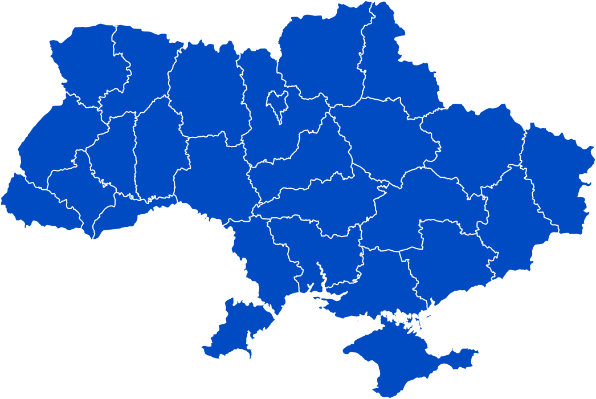

Червона калина
Україна – держава у Східній Європі. Україна займає площу 603 628 км2 (233 062 квадратних миль) і є другою за величиною країною в Європі. Населення України становить близько 44,7 мільйона чоловік, що робить її восьмою за чисельністю населення країною в Європі. Її столицею і найбільшим містом є Київ.
Україна межує з: Європейським Союзом (Словаччина, Польща, Угорщина, Румунія), Молдовою, Білоруссю, Росією.Грошова одиниця України — українська гривня (UAH), введена в 1996 р.
Київ — столиця України. Це також найбільше місто за площею (близько 800 квадратних кілометрів) і за кількістю населення (приблизно 3,5 мільйона людей). Інші важливі міста: Харків, Дніпро, Одеса, Донецьк, Львів.
Назва «Україна» (УКРАЇНА) походить від слов’янського слова «край», що означає «земля» або «кордон», або також «батьківщина», «край, країна». Найдавніша згадка про слово «Україна» датується 1187 роком (Київський літопис).
Український прапор складається з двох рівних горизонтальних смуг синього та жовтого кольорів, що символізують блакитне небо та жовті пшеничні поля.
Називається він Тризуб (або Тризуб), у тому ж кольорі, що й на українському прапорі – синій щит із золотим тризубом на ньому. Оскільки він датується дуже давніми часами, є кілька пояснень його значення.
Єдиною державною мовою України є українська, що належить до індоєвропейської родини, слов’янської групи мов.
